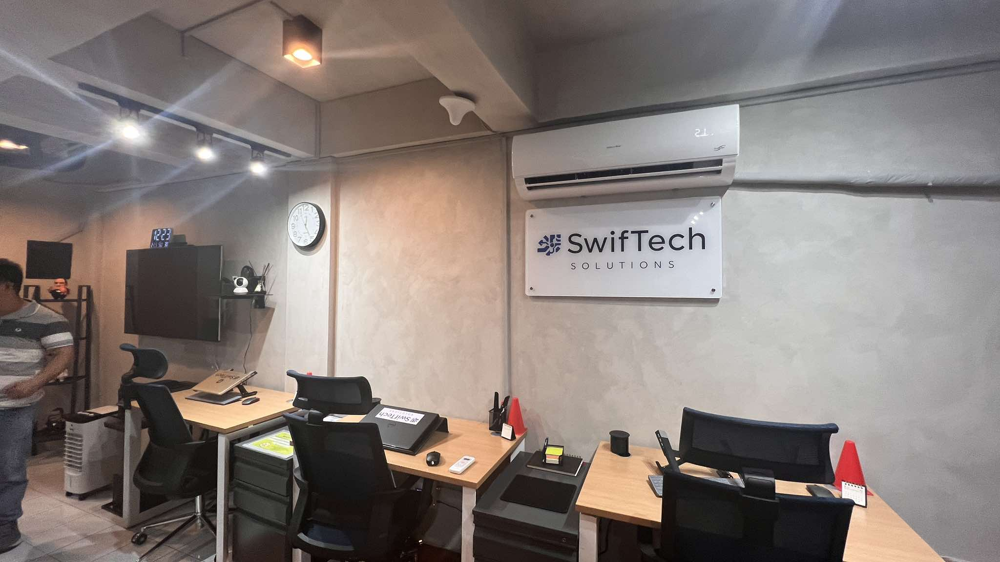
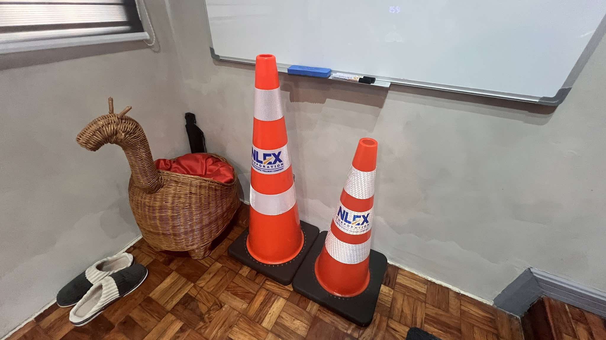
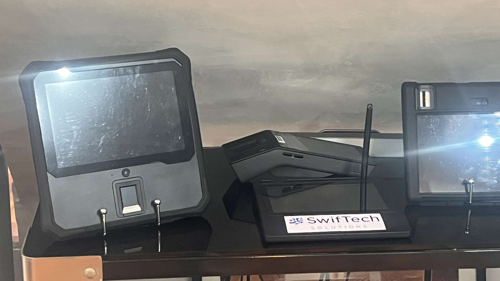
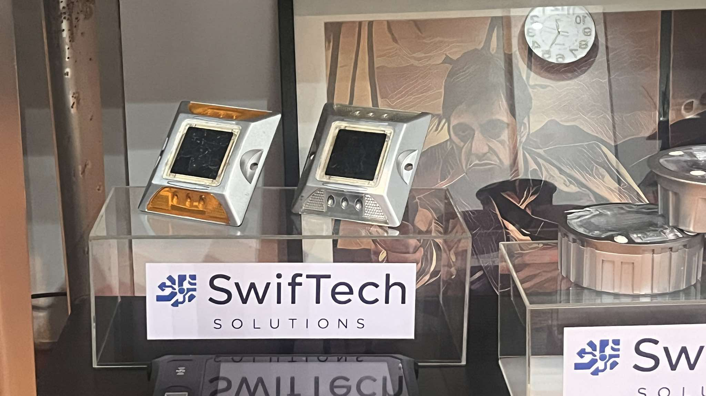

In today's fast-paced world, cutting-edge software technology plays a crucial role in enhancing operational efficiency within organizations. By delivering comprehensive, tailor-made solutions, these technologies streamline workflows and foster seamless connectivity across all levels of an organization. Customized software solutions allow businesses to address their unique operational needs, improving productivity and optimizing resource management.

With advanced data analytics and automation capabilities, these technologies empower organizations to make informed decisions, reduce operational costs, and improve overall performance. Additionally, integrating artificial intelligence and machine learning into software systems enables predictive analysis, helping businesses anticipate challenges and implement proactive solutions.
In emergency response situations, specialized emergency truck designs combine functionality, safety, and advanced technology to meet the demands of various scenarios. These vehicles are meticulously crafted to ensure quick deployment, equipped with state-of-the-art communication systems, emergency equipment storage, and enhanced safety features. The fusion of robust design and modern technology enables emergency responders to effectively perform their duties, safeguarding both lives and property. Advanced navigation and tracking systems further assist emergency personnel in reaching destinations efficiently, minimizing response time, and improving rescue efforts. Furthermore, ergonomic interiors and optimized equipment layouts ensure that emergency responders can operate effectively, even under high-pressure conditions.
Quality traffic cones and road studs are essential for maintaining road safety, especially in high-traffic or hazardous environments. Crafted from robust materials, these products are exceptionally durable, retaining their structural integrity even in harsh weather conditions.

Traffic cones provide clear visual guidance, while road studs enhance nighttime visibility, reducing the risk of accidents and ensuring the safety of drivers and pedestrians alike. These road safety tools are essential in construction zones, accident sites, and high-risk areas, helping to prevent collisions and ensure smooth traffic regulation.
The use of reflective coatings and solar-powered lighting elements further enhances visibility, making these products indispensable for road safety management.
LED billboards and portable flashing arrows are indispensable tools for enhancing visibility and guiding traffic. These products play a critical role in traffic management, improving road safety and maintaining smooth traffic flow.

LED billboards deliver clear, bright messages to motorists, while portable flashing arrows provide directional guidance in construction zones or during road diversions.
Both products contribute significantly to reducing traffic congestion and preventing accidents. With the integration of smart technology, LED billboards can display real-time updates, emergency alerts, and dynamic messages that adapt to changing traffic conditions. The energy-efficient nature of LED technology also makes these signage solutions environmentally friendly and cost-effective in the long run.
For water safety, high-quality life vests are essential to ensure protection during recreational and professional activities. Designed for maximum comfort and certified to meet safety standards, these life vests provide peace of mind to users. Whether navigating calm waters or facing challenging conditions, a reliable life vest offers the necessary buoyancy and security to keep individuals safe on every adventure. These vests are constructed using lightweight, high-buoyancy materials, ensuring that wearers remain afloat with minimal effort.
Additionally, modern life vests are designed with adjustable straps and ergonomic fits, allowing for enhanced mobility without compromising safety. Many models also feature high-visibility colors and reflective strips, making it easier to locate individuals in the water during emergencies.
The continued advancement of these technologies and products ensures that individuals and organizations remain prepared to tackle challenges in various environments.

By prioritizing innovation, durability, and efficiency, these solutions contribute to enhanced safety, improved operational performance, and streamlined processes across multiple industries.
As technology evolves, these essential tools will continue to play a critical role in promoting security, safety, and efficiency in everyday life and emergency situations alike.